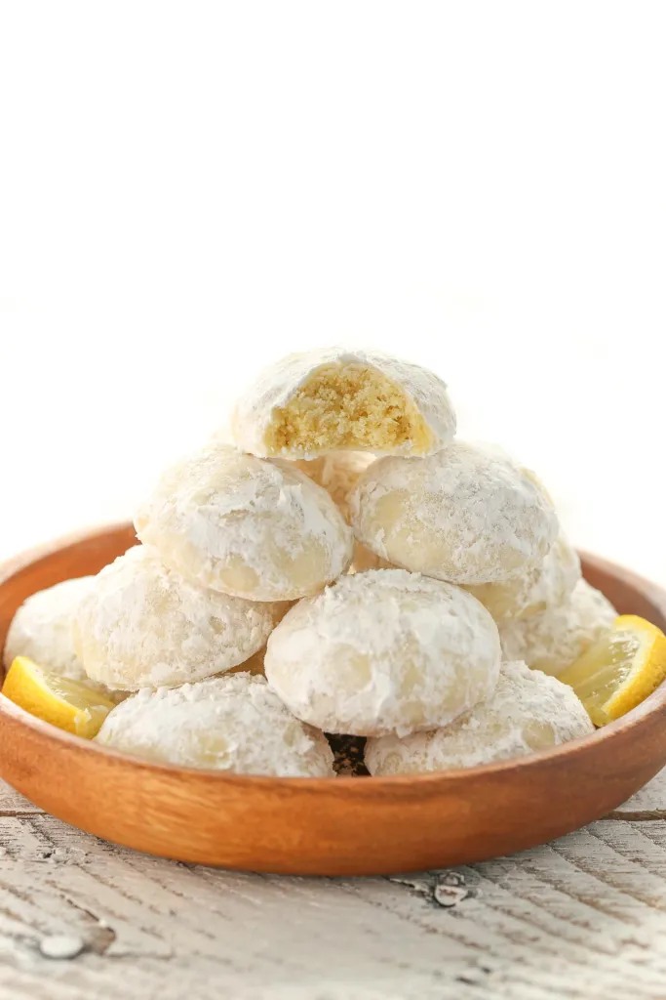

HOME
Lemon cookies

Have you ever made snowball cookies? If you haven't, imagine a rich and buttery cookie coated in powdered sugar that literally melts in your mouth. And yes, they're just as delicious as they sound.
If you've never made snowball cookies, I can promise they're probably one of the easiest cookies you'll ever make. You just need a few simple ingredients and you don't even have to chill the cookie dough!
Ingredients
- 1 cup (230 grams) unsalted butter, softened.
- 1 and 1/2 cups (180 grams) powdered sugar.
- 1 tablespoon (15 ml) fresh lemon juice.
- Zest of 1 lemon.
- 1 and 1/2 teaspoons lemon extract.
- 2 and 1/4 cups (280 grams) all-purpose flour.
- 1/4 teaspoon salt.
Steps
- Preheat oven to 350°F. Line two large baking sheets with parchment paper or silicone baking mats and set aside.
- In the bowl of a stand mixer fitted with the paddle attachment, or in a large mixing bowl using an electric mixer, cream together the butter and ½ cup (60 grams) of powdered sugar (set the remaining 1 cup aside to roll the cookies in) for 1-2 minutes or until well combined. Add the lemon juice, lemon zest, and lemon extract and mix until fully combined. Mix in the flour and salt until fully combined, stopping to scrape down the sides of the bowl as needed.
- Using a 1-tablespoon cookie scoop (or measuring tablespoon) scoop out the cookie dough, roll into balls, and place on the prepared baking sheets.
- Bake in separate batches at 350°F for 14-15 minutes or until the cookies are set.
- Allow cookies to cool slightly for about 5-10 minutes, then roll each cookie in the remaining 1 cup (120 grams) of powdered sugar while they're still warm. Allow to cool completely and roll all of the cookies one more time in the powdered sugar.
See how easy it was!!!